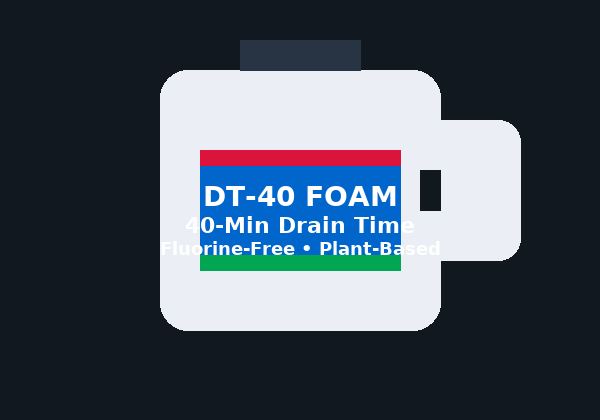

DT‑40 Firefighting Foam
Performance That Buys You Time
DT‑40: 40‑Minute Drain Time. Plant‑Based. Fluorine‑Free.
- 40‑Minute Drain Time — extended coverage for hydrocarbon fires.
- Plant‑Based Formula — eco‑forward without PFAS trade‑offs.
- 100% Fluorine‑Free — compliance‑ready for airports, ports, and industry.
Manufactured by Redline Fire Solutions. Distributed globally by Quintech Fire Solutions International.
Quin = 5. Tech = The Five Pillars of Technical Mastery.
The Five Pillars of Technical Mastery
Technology. Technique. Tactical Expertise. Training. The Human Factor.
Where Technology Meets Tactics.
PyroLance UHP
Cold cutting & mist penetration for modern fire problems, including EV incidents.
Quintech Academy
Train • Certify • Comply. Student, Instructor, Employer, and Insurer Portals.
Field Intel
Industry‑specific updates for maritime (RO‑RO & cargo), mining, rail, oil & gas, and wildland/WUI.